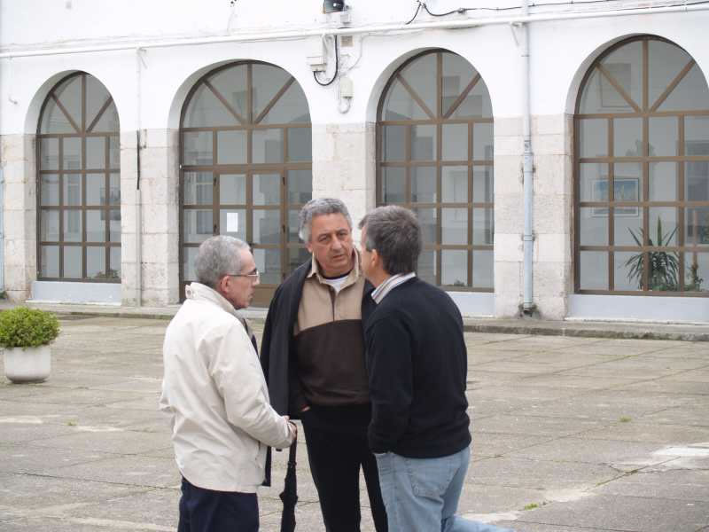

Encuentro en SantoñaNos echaron de la cafetería porque era la hora de cierre.... Mira tu por donde, a las 15'44 horas hace su aparición Jesús Escribano, tan puntual a la cita, bueno, tampoco quedamos, pero llegó, aunque fue una estancia más bien corta, pero ahí está él, con su pelo blanco, que no es blanco, es de color diferente, pero que tiene pelo, oiga. |
|
 |